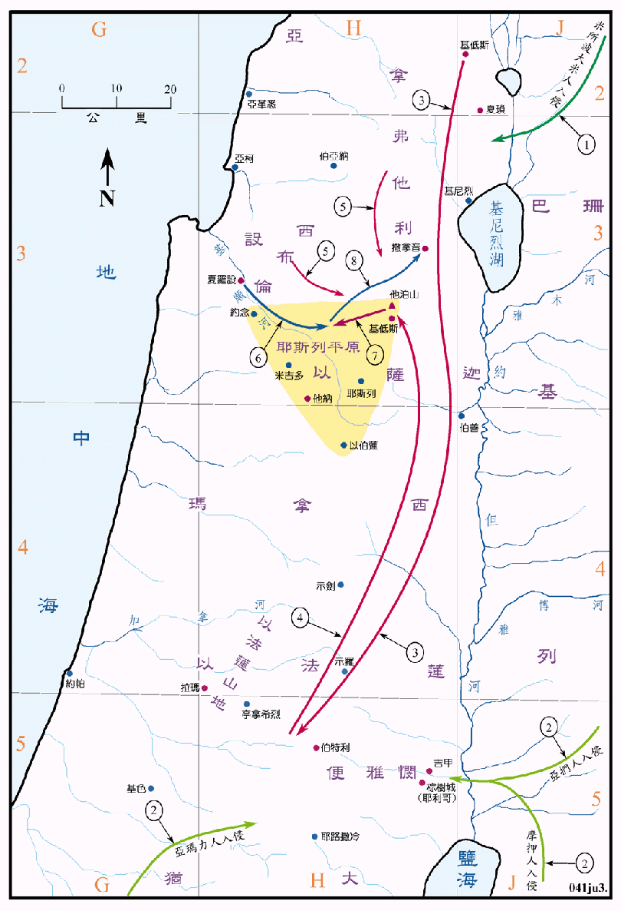

俄陀聂 (1367～1237BC)
以笏 (1309～1229BC)
底波拉 (1209～1169BC)

行动线说明
| 序号 | 圣经 | 说明 |
|---|---|---|
| 1 | 士3:7-11 | 米所波大米人入侵，使以色列人服事了他们八年。俄陀聂兴起拯救，於是国中平静了四十年。 |
| 2 | 士3:12-28 | 摩押人招聚了亚扪人和亚玛力人入侵，使以色列人服事了他们十八年。以笏兴起拯救，於是国中太平了八十年。 |
| 士4:1-3 | 迦南人夏琐王欺压以色列人二十年。 | |
| 3 | 士4:4-7 | 底波拉作以色列人的士师，她召基低斯的巴拉到伯特利和拉玛附近她的家中，令他攻击夏琐王。 |
| 4 | 士4:8-9 | 底波拉和巴拉同去基低斯。 |
| 5 | 士4:10-12 | 巴拉召集西布伦人和拿弗他利人 (可能还有以萨迦人) 共一万人到基低斯。 |
| 6 | 士4:13 | 夏琐王的将军西拉拉从夏罗设出来攻打以色列人，到了基顺河。 |
| 7 | 士4:14-15 | 以色列人从他泊山下来，击败了西拉拉的大军。 |
| 8 | 士4:15-22 | 西拉拉兵败后逃亡，到了撒拉音的橡树旁，被基尼妇人雅亿所杀。 |
在以色列的士师时代，埃及对迦南已经失去了控制力，但是迦南一地仍然不断的受到附近民族的干扰，神也不时的兴起士师来拯救他们。最早入侵的是米所波大米人，再有摩押人联合亚扪人和亚玛力人的侵扰，都先后被俄陀聂和以笏所打败。
迦南人夏琐王又再欺压了以色列人有四十年之久，他的武力强大，在所罗门王最盛的时期，只有铁车一千四百辆，而夏琐王集结了九百辆铁车，足见其军力之盛。他和以色列人对阵之处是在他泊山下的耶斯列平原，这个平原在耶斯列城之西，形状像一个三角形，各以他泊山、约念和以伯莲为顶点，地面相当的宽广又平整，最适合战车驰骋，可说是占了极大的优势。相对的，以色列人只有一万，而且是仓促成军，缺乏训练，更没有作战经验，两者的实力相差悬殊，有如以卵击石。但是当暴雨骤至，基顺河的河水泛滥，不但冲没了西西拉的军队，使得地面泥泞松软，令车轮深陷，动弹不得，因而溃败。
在这段史实中，提到了两个「基低斯」，一个是拿弗他利的基低斯，位於加利利湖之北；另一个是靠近撒拿音橡树的加低斯，则是在他泊山的南麓。